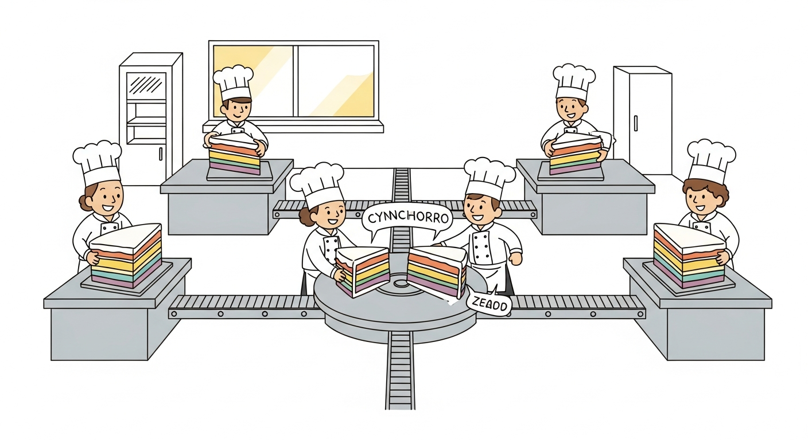
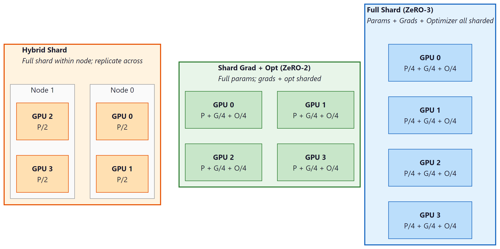

When one GPU is no longer enough, distributed training spreads the model, the data, or both across multiple devices. PyTorch ships three increasingly capable approaches: the legacy single-process DataParallel (briefly covered for historical context), the modern multi-process DistributedDataParallel (the default for data-parallel training), and Fully Sharded Data Parallel (FSDP, the default for models that exceed a single GPU's memory). For most teams that do not want to write distributed code at all, Hugging Face Accelerate provides a thin launcher on top of these primitives. This section explains when to reach for each.
The mathematical story behind why distributed pretraining works at all (the Chinchilla scaling laws, the compute-optimal token budget) lives in Chapter 6. Distributed inference patterns for production serving are covered in Chapter 9.
DataParallel: The Legacy Single-Process Path
The original nn.DataParallel wraps a model and, on each forward pass, scatters the input across multiple GPUs, replicates the model on each, runs the forward pass in parallel, and gathers the outputs. It runs entirely in one Python process. This sounds attractive but is dominated by the global interpreter lock (GIL): the gather step serializes all gradients through the master process, and the replication step copies the model on every forward pass. DataParallel typically achieves 50 to 70 percent of single-GPU efficiency per added device.
Use DataParallel for nothing. It is mentioned here only because legacy code uses it. The drop-in modern replacement is DistributedDataParallel, which uses one process per GPU and is strictly faster and more scalable.
DistributedDataParallel: The Modern Default
nn.parallel.DistributedDataParallel (DDP) replicates the model on every GPU, runs forward and backward independently on each replica, and then synchronizes gradients via an all-reduce collective so every replica sees the average gradient and performs an identical optimizer step. Each GPU runs in its own process; there is no master process bottleneck. The all-reduce overlaps with the backward pass (gradients for early layers are reduced while later layers are still computing their backwards), so the communication cost is largely hidden.
The launcher is torchrun, which sets the environment variables every DDP process needs (RANK, WORLD_SIZE, LOCAL_RANK, MASTER_ADDR, MASTER_PORT) and spawns one process per GPU. The training script then initializes the process group, builds the model on the local GPU, and wraps it in DDP.
import os
import torch
import torch.distributed as dist
from torch.nn.parallel import DistributedDataParallel as DDP
def main():
dist.init_process_group(backend="nccl")
local_rank = int(os.environ["LOCAL_RANK"])
torch.cuda.set_device(local_rank)
device = torch.device("cuda", local_rank)
model = NeuralNetwork(num_inputs=512, num_outputs=10).to(device)
model = DDP(model, device_ids=[local_rank])
optimizer = torch.optim.AdamW(model.parameters(), lr=1e-4)
sampler = torch.utils.data.distributed.DistributedSampler(train_set)
loader = torch.utils.data.DataLoader(train_set, batch_size=32,
sampler=sampler)
for epoch in range(num_epochs):
sampler.set_epoch(epoch) # ensures different shuffle per epoch
for features, labels in loader:
features = features.to(device, non_blocking=True)
labels = labels.to(device, non_blocking=True)
optimizer.zero_grad(set_to_none=True)
loss = torch.nn.functional.cross_entropy(model(features), labels)
loss.backward()
optimizer.step()
dist.destroy_process_group()
if __name__ == "__main__":
main()
# Launch: torchrun --nproc-per-node=4 train_ddp.py
torchrun --nproc-per-node=N) spawns N processes, each pinning itself to one local GPU. The DistributedSampler ensures each rank sees a disjoint slice of the dataset.DistributedSampler generates its shuffle from a seed that depends on self.epoch. Without sampler.set_epoch(epoch) at the top of each epoch, every epoch will use the same shuffle, which silently degrades training. The same applies to the gradient-accumulating cousin: if accumulation is used, do not call set_epoch inside the accumulation inner loop. Forgetting this is the single most common DDP bug.
Every DDP rank runs the same script, but logs, checkpoints, and external API calls should usually happen on rank 0 only. The idiom is if dist.get_rank() == 0: around the relevant block. For metric aggregation across ranks, use dist.all_reduce(tensor, op=dist.ReduceOp.SUM) first to sum values across all ranks, then divide by world size on rank 0 before logging. Hugging Face Trainer and Accelerate handle this bookkeeping automatically; raw DDP requires explicit care.
Fully Sharded Data Parallel
DDP replicates the model on every GPU, so the maximum model size is bounded by single-GPU memory. For multi-billion-parameter models, this is the binding constraint long before compute becomes the bottleneck. Fully Sharded Data Parallel (FSDP) breaks the constraint by sharding the model's parameters, gradients, and optimizer state across GPUs: each rank holds only its slice and reconstructs full layers on demand using all-gather collectives, freeing them again after use.
The intuition is that, for a transformer layer with parameter count $P$ per GPU sharded across $N$ GPUs, each GPU only stores $P/N$ in steady state but briefly materializes $P$ during the forward pass for that layer. With activation checkpointing layered on top, even very large models can be trained on commodity GPU clusters. The cost is communication: each layer's forward and backward incurs an all-gather and (in backward) a reduce-scatter; the wall clock penalty versus DDP is typically 10 to 30 percent, more than paid back by the larger model that now fits.
FSDP1 vs FSDP2
PyTorch has shipped two FSDP implementations. FSDP1 (the original, available since PyTorch 1.11) wraps modules at construction time and exposes a per-module API. It works but has rough edges: limited support for parameter freezing, complex interaction with torch.compile, and a state-dict format that does not match a single-GPU model. FSDP2 (introduced in PyTorch 2.4, generally available in 2.5) uses a per-parameter sharding strategy built on the DTensor abstraction. It is simpler to use, composes cleanly with torch.compile and mixed precision, supports partial freezing, and saves state dicts that are interchangeable with single-GPU checkpoints. New code should use FSDP2.
import torch
import torch.distributed as dist
from torch.distributed.fsdp import fully_shard, MixedPrecisionPolicy
dist.init_process_group(backend="nccl")
local_rank = int(os.environ["LOCAL_RANK"])
torch.cuda.set_device(local_rank)
model = build_transformer().cuda()
mp_policy = MixedPrecisionPolicy(
param_dtype=torch.bfloat16, # parameters held in bfloat16
reduce_dtype=torch.float32, # gradient all-reduce in float32
)
# Shard each transformer block independently for finer-grained
# overlap of compute and communication.
for block in model.transformer_blocks:
fully_shard(block, mp_policy=mp_policy)
fully_shard(model, mp_policy=mp_policy)
optimizer = torch.optim.AdamW(model.parameters(), lr=1e-4)
# Training loop is identical to DDP from this point on.
fully_shard(model) handles the remaining top-level parameters.Sharding Strategies

Figure E.7.1: Three FSDP sharding strategies trade memory savings for communication volume; full shard maximizes savings, hybrid shard balances intra-node speed against cross-node bandwidth.
FSDP exposes several strategies that trade memory against communication:
- Full shard (the default): parameters, gradients, and optimizer state are all sharded. Maximum memory savings, highest communication. The right choice when the model would not otherwise fit.
- Shard grad and optimizer only (ZeRO-2 in DeepSpeed terminology): parameters replicated, gradients and optimizer state sharded. Less communication, less memory savings. Useful when parameters fit but optimizer state does not.
- Hybrid shard: full shard within a small group of GPUs (e.g., one node), replicated across groups. Reduces cross-node bandwidth requirements; the typical choice for multi-node training where intra-node NVLink is much faster than inter-node Ethernet or InfiniBand.
Combining with Activation Checkpointing
Activation checkpointing (also called gradient checkpointing) trades compute for memory: instead of saving every intermediate activation for the backward pass, only a subset is saved and the rest are recomputed. For transformers, the typical recipe is to checkpoint every attention block, which roughly halves activation memory at the cost of one extra forward pass per backward. Combined with FSDP, activation checkpointing is what makes 7B-to-70B parameter models trainable on clusters of 80GB GPUs. The PyTorch API is torch.utils.checkpoint.checkpoint(function, *args) or, for whole modules, the more ergonomic torch.distributed.algorithms._checkpoint.checkpoint_wrapper.
DDP synchronizes gradients at the end of every backward pass. If one rank takes a different code path that skips a backward (early-exit on a condition, an exception swallowed in a try block, a rank that finishes its data shard early), the other ranks block forever waiting for the all-reduce that will never arrive. The symptom is a job that hangs at constant GPU utilization with no progress logs. Mitigations: keep the forward and backward path identical on every rank (gate divergences with dist.all_reduce on a flag tensor), set find_unused_parameters=True only when actually needed (it imposes its own overhead), and make sure all ranks see the same number of batches per epoch (use drop_last=True and a divisor-friendly batch size).
Hugging Face Accelerate
Hugging Face's accelerate library is a thin abstraction over PyTorch's distributed primitives that lets a single training script run unchanged on CPU, single GPU, multi-GPU DDP, FSDP, or DeepSpeed. The pattern is to construct an Accelerator, call accelerator.prepare(model, optimizer, loader), and then use accelerator.backward(loss) instead of loss.backward(). The accelerate config CLI walks the user through choosing a launch strategy and writes a config file; accelerate launch script.py then handles the equivalent of torchrun.
Accelerate is the recommended starting point for teams that want distributed training without authoring the boilerplate. The escape hatch (dropping to raw DDP or FSDP) is always available when fine-grained control is needed.
A single call wraps the model in DDP or FSDP, attaches a DistributedSampler to the DataLoader, moves everything to the right device, and configures mixed precision. The training loop reads exactly like the single-GPU version; the launcher decides at runtime whether to spawn one or many processes.
from accelerate import Accelerator
accelerator = Accelerator(mixed_precision="bf16")
model, optimizer, loader = accelerator.prepare(model, optimizer, loader)
for epoch in range(num_epochs):
for batch in loader:
loss = compute_loss(model, batch)
accelerator.backward(loss)
optimizer.step()
optimizer.zero_grad(set_to_none=True)
Pick the distribution strategy based on what does not fit. If the model fits but training is slow, use DDP (torchrun plus DistributedDataParallel plus DistributedSampler). If the model does not fit on a single GPU, use FSDP2 with a mixed-precision policy and activation checkpointing. If standing up the distributed boilerplate is the bottleneck, use Hugging Face Accelerate to write hardware-agnostic training code. Skip DataParallel entirely; it exists only for backward compatibility.
Objective
Take a working single-GPU training loop and migrate it through three stages: torchrun-launched DistributedDataParallel, FSDP2 with full sharding, and finally a hardware-agnostic Hugging Face Accelerate version. At each stage, measure throughput, peak memory per rank, and final accuracy to develop intuition for when each strategy pays off. Single-machine multi-GPU is fine; if only one GPU is available, simulate two ranks with gloo on CPU to exercise the API surface.
Setup
- Hardware: two or more GPUs preferred; otherwise CPU with
gloobackend for API practice. - Install
torch>=2.4(for FSDP2 stable API) andaccelerate. - Workload: train a 60M-parameter GPT-style transformer on the Tiny Shakespeare character-level dataset. Use a 6-layer, 384-dim, 6-head config so a single-rank run completes in roughly 10 minutes per epoch on a modest GPU.
Steps
- Step 1: Single-GPU baseline. Train for one epoch. Log peak memory, samples per second, and final validation loss. This is the reference.
- Step 2: DDP migration. Wrap the model in
DistributedDataParallel. Switch the dataloader toDistributedSampler(dataset, num_replicas=world_size, rank=rank)and callsampler.set_epoch(epoch)each epoch. Initialize withdist.init_process_group(backend="nccl"). Launch withtorchrun --nproc_per_node=2 train.py. Confirm throughput scales near-linearly with world size on small batches and that final loss matches the baseline within 2 percent. - Step 3: Add gradient accumulation under DDP. Use
model.no_sync()on the inner micro-batches to skip the gradient all-reduce until the last micro-batch. Measure the gain (one all-reduce per K micro-batches instead of K). - Step 4: FSDP2 migration. Replace the DDP wrap with
fully_shard(model, mp_policy=MixedPrecisionPolicy(param_dtype=torch.bfloat16)). Compare peak memory per rank against DDP (expect roughly a 3x reduction at this scale because both parameters and optimizer state are sharded). Throughput will drop slightly; quantify the trade-off. - Step 5: Activation checkpointing. Wrap each transformer block with
torch.utils.checkpoint.checkpoint. Re-measure peak memory and step time. Expect a 30 to 40 percent memory drop in exchange for roughly 30 percent slower steps. - Step 6: Accelerate rewrite. Rewrite the loop using
Accelerator. Confirm that the same single source file launches correctly viaaccelerate launch --multi_gpuand viaaccelerate launch --num_processes=1without changes. Count lines deleted versus added.
Stretch Goals
- Add hybrid sharding: shard within a node, replicate across nodes. On a 4-GPU machine, use
FSDP2with sharding group size 2 to simulate. - Profile the all-reduce step with
torch.profiler, identify the bucketing strategy, and explain in one paragraph why DDP overlaps all-reduce with backward. - Save and load a checkpoint via
torch.distributed.checkpoint(DCP) instead ofstate_dict. Demonstrate resharding from 2 ranks to 1 rank when loading.
Expected Output
Expected time: 6 to 8 hours. Difficulty: advanced. Artifact: three working training scripts (single-GPU, DDP, FSDP2) plus the Accelerate version, with a benchmark table comparing all four on the same workload.